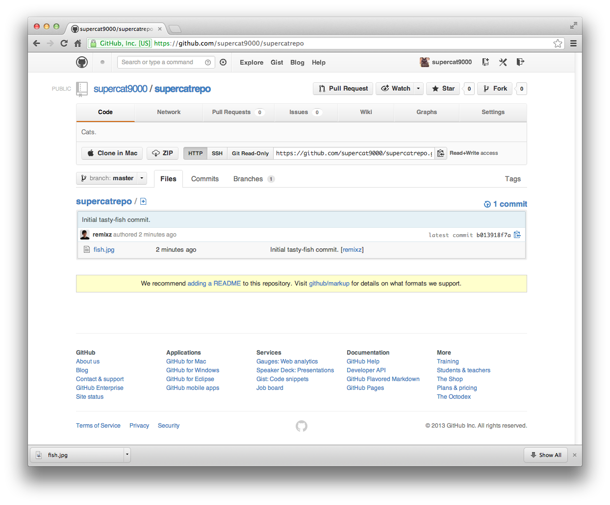
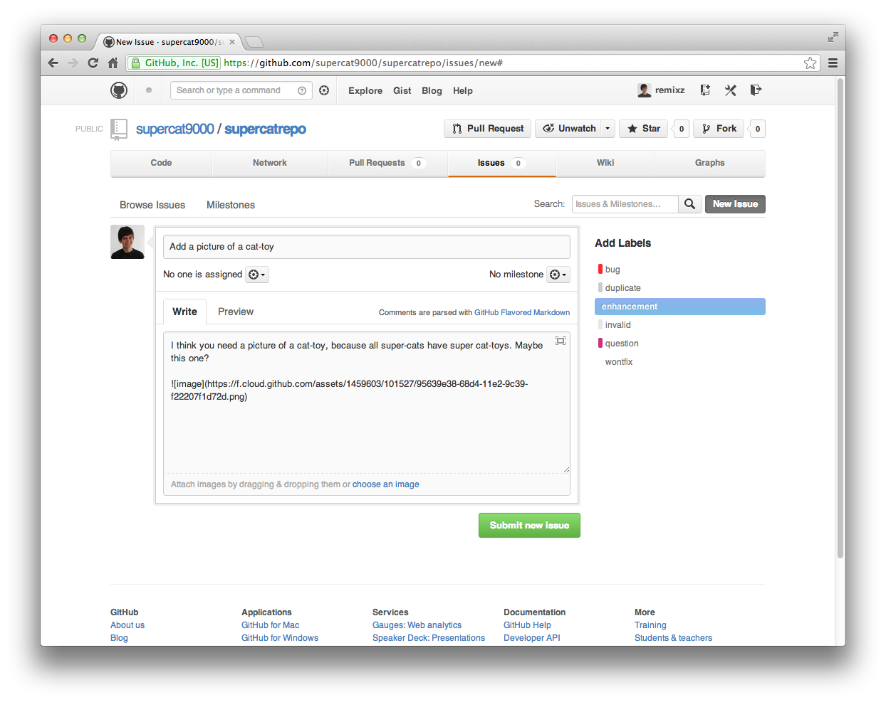
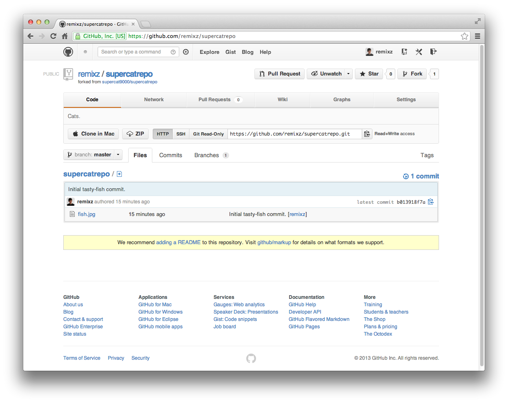
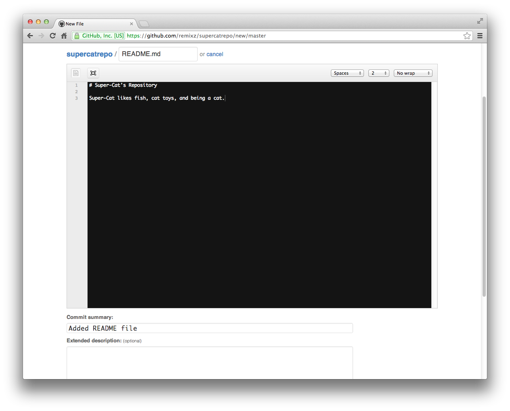
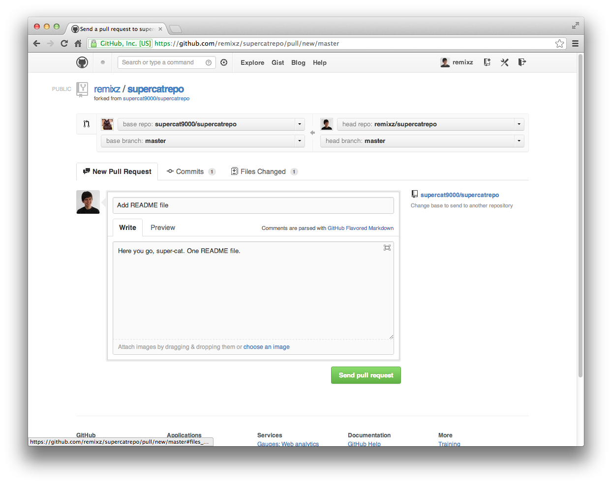
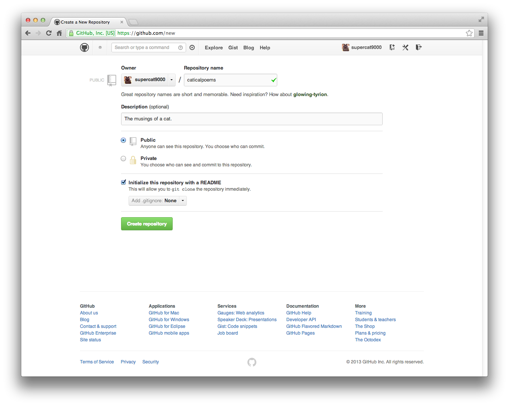
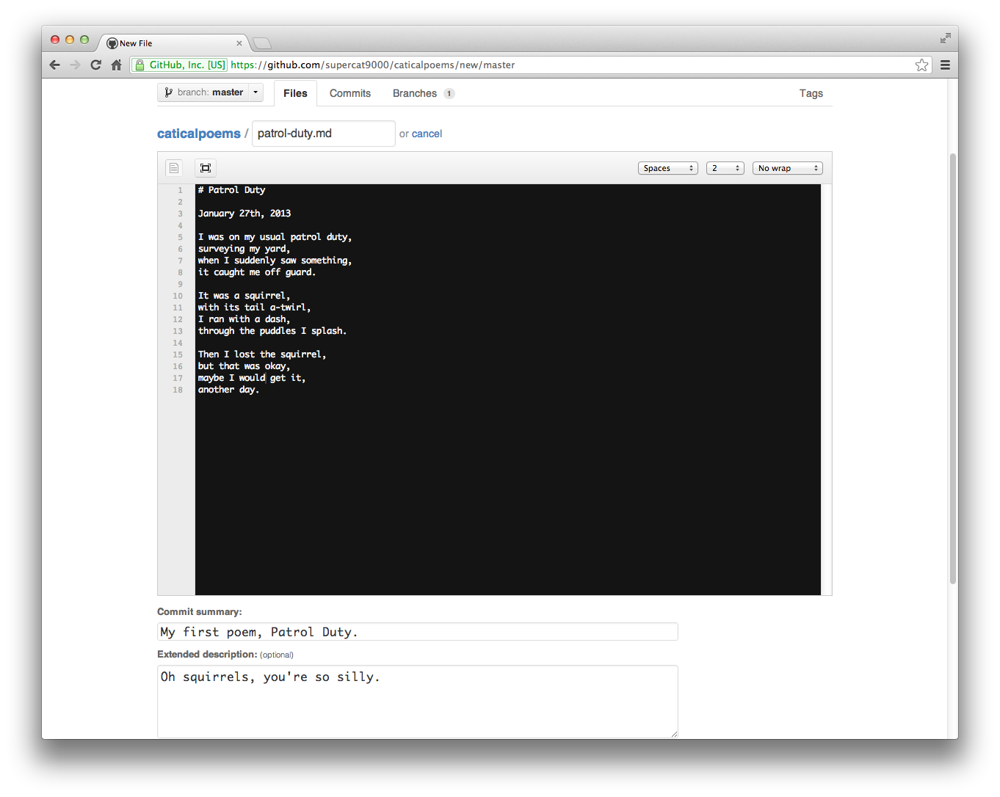
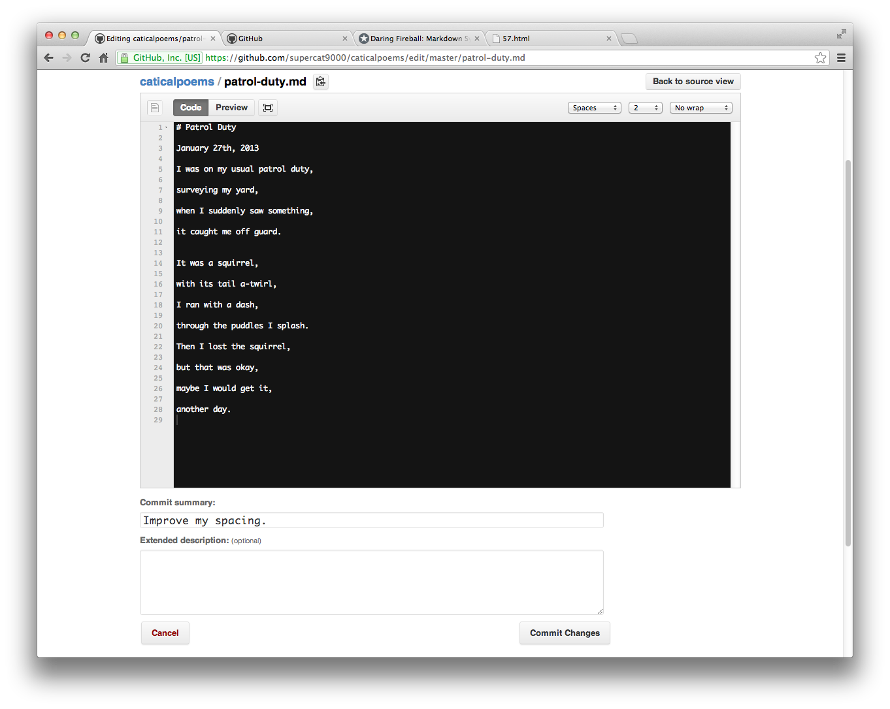
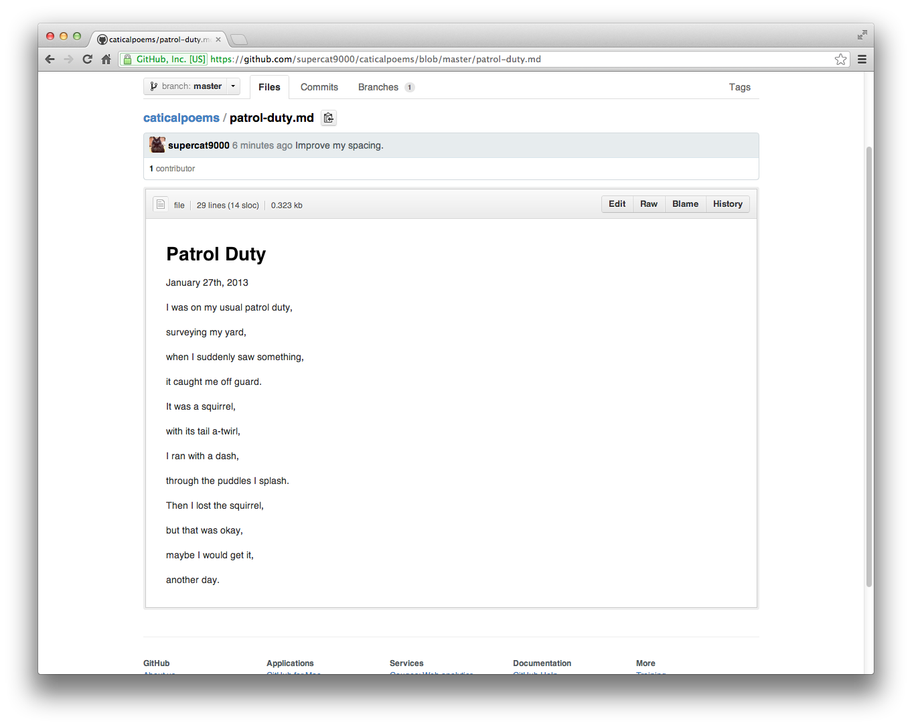

GitHub For Cats Because cats just wanna have forks.
Introduction:
If you're a cat, you probably haven't heard of GitHub. Maybe your human companion has, but they don't really know how to explain it to you. (Which, as a cat, is extremely frustrating.) GitHub is a website that allows content creators, whether it be via programming, blogging, or issue-reporting, to collaborate together and to learn from each other. It's powered by a "distributed version control system" called git. A "distributed version control system" sounds pretty complicated, but it really isn't. What it really means is that lets you, a cat, manage all of the stuff you have made (like maybe some JavaScript?) in one place, and be able to go back in time to see what you did before. It also lets other cats (or maybe humans) see what you've done, and help you out with it. This guide will get you introduced to the world of GitHub through the adventures of supercat9000, and it might even help your poor, misinformed human companion as well!
Getting Up and Running:
You may stay laying down though, as you are a cat.
The best way to get started with GitHub is to create a GitHub account!

That was easy. You're now logged into your GitHub account, where you can do anything!
Getting Social:
Before you tackle the code-y parts of GitHub, a great way to start is to find others' code. One way to find lots of cool projects is by checking out the Explore page. The projects featured here are all top-notch, so see what interests you! (Probably the shiniest ones.) You can also follow people, to see all of their activity. (Maybe you want to follow this sharp fellow?) Finally, once you find a project you like, you can "star" it, which makes code-writers feel really awesome about themselves. It's that same feeling you might get when a new can of tuna is opened. Slightly less fishy-smelling, though.
The Lay of the Land:
GitHub is split into a lot of pages. The first one we can look at is a repository. Let's look at supercat9000's repo.

You'll notice a lot at first. You can see there's one file, called fish.jpg. You'll see in the picture it says "remixz authored 2 minutes ago." I had to author this for Super Cat, because even though he is a super-cat, he was too lazy to upload the fish. He did create an account though, which is a very super-cat like thing to do. I had to download the fish though, because Super Cat fell asleep. Because I am a nice human companion, I think I'm going to help improve his code. This, in essence, is what GitHub is all about!
An issue:
The first thing I will do is create an issue. I think Super Cat needs a picture of a cat toy. So, I will click the Issues button at the top of the page, and choose the New Issue button.

As you can see, I've filled out an issue. I've added a title, to quickly show what this is about. I also filled out the text, and added an image, which I did by dragging and dropping it in. I finally added a label, to let Super Cat know this is an enhancement to his repository. I'll click Submit new Issue, and I've filed the first issue!
Another thing I want to do for him is make him a README. I can do this by creating a "fork" of his repository, and then submitting him a "pull request." Let's walk through that now.
Forks For Cats:
Unlike a real fork, GitHub forks are much more cat friendly. A fork is essentially like copying a folder on your computer; you choose the folder, copy it, and paste it somewhere else. With a fork, you find the repository, press the Fork button on the repository, and...

My own fork (or copy) of Super Cat's repo! Now I can help him out. GitHub files can be edited in a variety of ways, but for ease of use, I'm going to use the built-in online file editor. To access this, click the document icon with the + symbol in it. You'll get a page that looks like this:

Now that I've done that, I'll just press Commit new file at the bottom, and I've added a README file to my fork.
Pull Requests:
Though there is a shiny new README in my fork of the repository, Super Cat doesn't have it. Because this is Super Cat's repository, I want to give it back to him. So, I will open a pull request! A pull request lets you take code you've written in a forked repository, and send it back to the original. On my repository page, I will hit Pull request.

I've added a title and a description, which tells Super Cat what this pull request is. I will hit Send pull request, and now Super Cat can choose to merge it in!
Creating a Repository:
Now, this has been fine and dandy, working with other cats' work. However, you want to do your own stuff! Thankfully, you're reading this guide. Let's make a new repository. Press the Create a new repo button on the top of your browser, right next to your name. Enter any name and description you want, and make sure to check Initialize this repository with a README.

Well done! You now have your own repository. Now, let's add something to it.
Adding to your Repository:
It turns out that along with being a super-cat, Super Cat is also a poet. Sort of. He can add his own poems to his new repository, caticalpoems. Press the new file button like you did with the fork earlier, and write up something:

We'll commit the file, and you now have a poem!
Editing Files in your Repository:
It turns out Super Cat made a mistake. He didn't space his lines enough. Thankfully, with the power of GitHub, we can change that. Click on the file, and choose Edit. You now have the same editor again, so make your changes:

And now Super Cat has an awesome poem.

Conclusion:
You now know the basics of GitHub! This is a very simple guide, as it is meant for you, a cat. GitHub, and git itself, can do a lot more. However, you now know a lot more than your neighborhood stray cat does. Feel good about that!
Feel free to try all of these demos on your own repositories, or on supercat9000's. I'm sure he'd appreciate any help he could get.
Attributions:
- Super Cat's photo is from @maxogden's cats repository, as I am a dog owner.
- This guide is based off of @maxogden's JavaScript for Cats. Go Max!
- If you work at GitHub, thanks for making such an awesome site.
Credits:
This guide is written by Zachary Bruggeman. You can see his dapper site here, with links to his Twitter, GitHub, and email. You can also make this guide way better on (of course) GitHub. Thank you for reading!